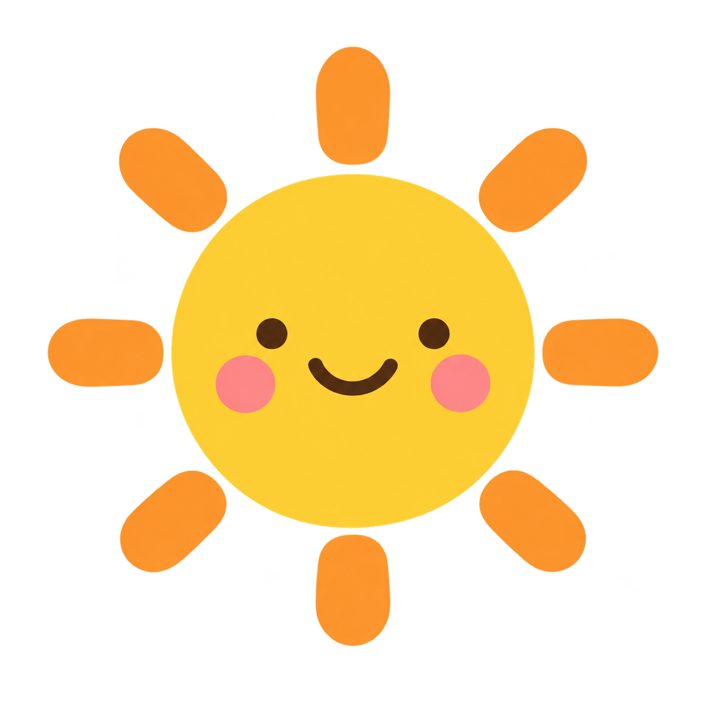
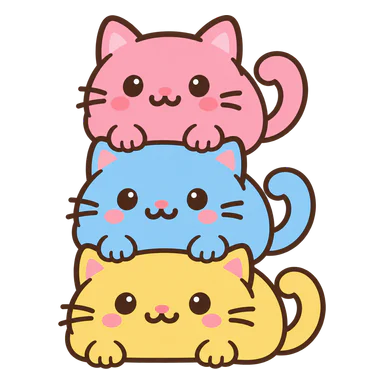

返回
作品相簿
設定與資訊

小小遊樂園
畫畫、動動腦，一起來玩吧！
簡單
全部
細節多
方塊出門
把貓咪拖到同顏色的門

過關了！
下一關
選關卡
✕
動物餐廳
點動物想吃的食物
客人都吃飽了！
下一關
選關卡
✕
回選圖
上一步
下一步
回首頁
顏色
✕
彩虹筆
✓
調出自己的顏色
色相
濃淡
明亮
用這個顏色
存成圖片
全螢幕
關於遊樂園
關於遊樂園
✕
版本
v1.0.0-beta.5
安裝到主畫面
安裝小小遊樂園
離線圖片
下載圖片分類
下載這個分類
公主線稿：Disneyclips.com · © Disney · 非商業使用
小龍線稿：TheToyZone
夜煞線稿：Cute Coloring · 非商業使用
光煞線稿參考：ColoringBook.ai · © DreamWorks
蓋比線稿：DreamWorks · © DreamWorks
蓋比角色線稿：WakeTheKids
派對貓：ColoringPages101
夜煞補充圖：Supercoloring／使用者提供
我的小畫展
✕